鸣谢：黑马程序员
Tip
Previous Chapter(上一章)：07-Speciall Files+Logs(特殊文件+日志技术)
Next Chapter(下一章)：09-Network Communication(网络通信)
08-Multithreading(多线程)一、概述二、创建多线程2.0 注意事项2.1 创建方式1：继承Thread类P1 步骤P2 代码演示P3 优缺点2.2 创建方式2：实现Runnable接口P1 步骤P2 代码演示P3 优缺点P4 使用匿名内部类简化上述代码2.3 创建方式3：利用Callable接口和FutureTask类P0 引入背景P1 步骤P2 代码演示P3 优缺点三、Thread类的常用API3.1 常用构造器3.2 常用方法四、线程安全4.1 线程安全问题4.2 用程序模拟线程安全问题P1 需求P2 代码演示P3 控制台输出（每次输出结果都不同，仅截取其中某一次）五、线程同步5.1 线程同步思想5.2 线程同步的常见方案5.2.1 同步代码块P1 概述P2 重构Account类P3 控制台输出P4 上述代码存在的问题P5 更正P2代码，将锁对象改为thisP6 补充知识5.2.2 同步方法P1 概述P2 重构Account类P3 控制台输出P4 同步代码块 VS 同步方法5.2.3 Lock锁P1 概述P2 重构Account类P3 控制台输出P4 上述代码存在的问题P5 更正P2代码，使用try-catch-finally包裹核心代码六、线程通信6.1 概述6.2 线程通信的常见模型——生产者与消费者模型6.3 用程序模拟生产者与消费者模型P1 需求P2 Object类提供的等待和唤醒方法P3 代码演示P4 控制台输出（每次输出结果都不同，仅截取其中某一次）七、线程池7.1 概述7.2 创建线程池7.2.0 注意事项7.2.1 创建线程池方式一：使用ExecutorService的实现类ThreadPoolExecutorP1 主要有参构造器P2 ExecutorService的常用方法7.2.2 使用线程池处理Runnable任务P1 复用核心线程P2 启用临时线程P3 拒绝新任务P4 新任务拒绝策略7.2.3 使用线程池处理Callable任务7.2.4 创建线程池方式二：使用Executors的工厂方法八、其它细节8.1 进程8.2 并发与并行8.3 线程的生命周期8.3.1 Java线程的6种状态8.3.2 线程状态的互相转换8.4 悲观锁和乐观锁8.4.1 概述8.4.2 案例代码8.4.3 使用悲观锁解决线程安全问题8.4.4 使用乐观锁解决线程安全问题8.4.5 深入分析AtomicInteger源码P0 CAS(Compare-And-Swap)算法P1 incrementAndGet()方法P2 VALUE变量P3 getAndAddInt()方法P4 weakCompareAndSetInt()方法（weak意为弱化版）
线程(Thread)：是一个程序内部的一条执行流程。
单线程程序：如果一个程序内部只有一条执行流程，则称这个程序是一个单线程程序。
多线程：是指从软硬件上实现的多条执行流程的技术（多条线程由CPU负责调度执行）。
Important
java.lang.Thread类代表线程。
启动线程必须调用start方法，而非run方法。
直接调用run方法会被当成普通方法执行，此时相当于还是单线程程序。
只有调用start方法才是启动一个新的线程执行。
不要把主线程任务放在启动子线程之前，否则会导致主线程任务执行完毕后才启动子线程，失去了多线程的意义。
Thread类创建一个子类MyThread并继承Thread类；
重写run()方法；
创建子类的实例对象；
调用线程对象的start()方法启动线程，start()方法内部会去调用子类重写的run()方法。
ThreadTest1类：
x1package create_thread;2
3public class ThreadTest1 {4 // main方法是由主线程负责执行的5 public static void main(String[] args) {6
7 Thread t = new MyThread();8 // 启动后，实现了多线程：主线程 + t线程9 t.start();// start会去调用子类重写的run方法10
11 for (int i = 0; i < 10; i++) {12 System.out.println("Main Thread output: " + i);13 }14 }15}MyThread类：
xxxxxxxxxx81public class MyThread extends Thread {2 3 public void run() {4 for (int i = 0; i < 10; i++) {5 System.out.println("child--My Thread output: " + i);6 }7 }8}控制台输出（每次输出结果都不同，仅截取其中某一次）：
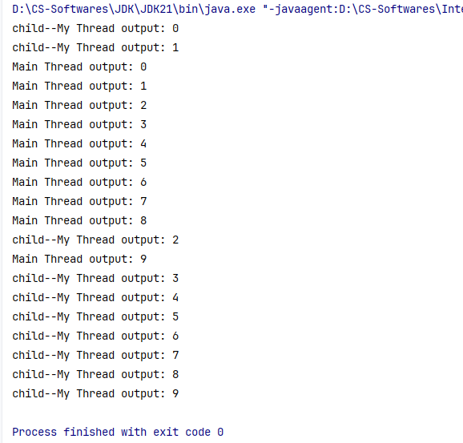
优点：编码简单。
缺点：子线程类已经继承了Thread类，无法再继承其他类，不利于后续功能扩展。
Runnable接口创建一个线程任务类MyRunnable并实现Runnable接口；
重写run()方法；
把MyRunnable线程任务对象作为参数传递给Thread的一个有参构造器，从而生成一个线程对象；
调用该线程对象的start()方法启动线程。
ThreadTest2类：
xxxxxxxxxx101public class ThreadTest2 {2 public static void main(String[] args) {3 Runnable target = new MyRunnable();4 new Thread(target).start();5
6 for (int i = 0; i < 10; i++) {7 System.out.println("Main Thread output: " + i);8 }9 }10}MyRunnable类：
xxxxxxxxxx81public class MyRunnable implements Runnable {2 3 public void run() {4 for (int i = 0; i < 10; i++) {5 System.out.println("child--My Runnable output: " + i);6 }7 }8}控制台输出（每次输出结果都不同，仅截取其中某一次）：
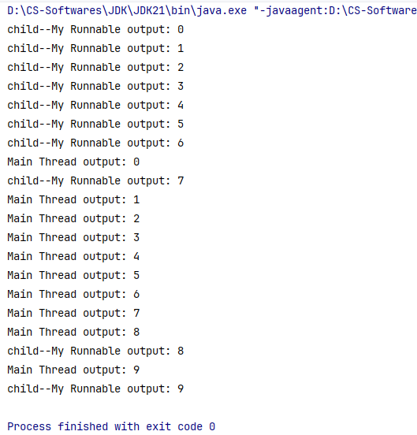
优点：线程任务类只是实现接口，可以继续继承其它类，实现其它接口，扩展性强。
缺点：需要额外创建一个Runnable对象。
xxxxxxxxxx111public class ThreadTest2_2 {2 public static void main(String[] args) {3 // Lambda表达式4 Runnable target = (() -> {5 for (int i = 0; i < 10; i++) {6 System.out.println("child output: " + i);7 }8 });9 new Thread(target).start();10 }11}
Callable接口和FutureTask类前两种创建方式都存在一个问题：假如线程执行完毕后有一些数据需要返回，由于run()方法的返回值为空，所以均不能直接返回结果。
因此，JDK5.0提供了Callable接口和FutureTask类来解决这个问题。
创建一个类MyCallable并实现Callable接口；
重写call方法，封装线程任务和要返回的数据；
把Callable对象封装成FutureTask对象（线程任务对象）。
把该线程任务对象作为参数传递给Thread的一个有参构造器，从而生成一个线程对象；
调用该线程对象的start()方法启动线程；
线程执行完毕后，可以通过FutureTask对象的get()方法去获取线程任务的执行结果。
Tip
可以采用匿名内部类简化步骤。
ThreadTest3类：
xxxxxxxxxx231import java.util.concurrent.Callable;2import java.util.concurrent.FutureTask;3
4public class ThreadTest3 {5 private static int n = 100;6
7 public static void main(String[] args) throws Exception {8
9 Callable<String> myCallable = (() -> {10 int sum = 0;11 for (int i = 1; i <= n; i++) {12 sum += i;13 }14 return "child calculate the sum from 1 to " + n + ": " + sum;15 });16
17 FutureTask<String> futureTask = new FutureTask<>(myCallable);18 new Thread(futureTask).start();19
20 String result = futureTask.get();21 System.out.println(result);22 }23}控制台输出：
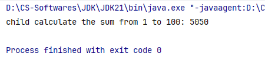
优点：
线程任务类只是实现接口，可以继续继承其它类，实现其它接口，扩展性强。
可以在线程执行完毕后获取到线程的执行结果。
缺点：编码相对复杂一些。
Thread类的常用API| 序号 | 构造器 | 说明 |
|---|---|---|
| 01 | public Thread(String name) | 创建一个指定名称的线程对象。 |
| 02 | public Thread(Runnable target) | 封装Runnable对象成为线程对象。 |
| 03 | public Thread(Runnable target, String name) | 封装Runnable对象成为线程对象，同时指定线程名称。 |
| 序号 | 方法 | 说明 |
|---|---|---|
| 01 | void run() | 线程的任务方法。 |
| 02 | void start() | 启动线程。 |
| 03 | String getName() | 获取当前线程名称，默认是Thread-索引。 |
| 04 | void setName(String name) | 为线程设置名称，建议在启动线程之前。 |
| 05 | static Thread currentThread() | 获取当前执行的线程对象。 |
| 06 | static void sleep(long time) | 让当前执行的线程休眠一定毫秒数后，再继续执行。 |
| 07 | final void join() | 调用此方法的线程会优先执行完毕，合理使用此方法可以安排线程执行顺序。 |
多个线程同时访问并修改同一个共享资源时，可能会出现业务安全问题。
比如A、B线程同时使用打印机，会导致打印出的内容混杂错乱。
小明和小红是一对夫妻，他们有一个共同银行账户Account1，余额是10万元，现在模拟二人同时取出10万元的操作。
Account:
xxxxxxxxxx331/**2 * 账户类，代表小明和小红的共同银行账户3 * 单例模式4 */5public class Account {6 private double money;// 账户余额7
8 private static Account account = new Account(100000);9 private Account(double money) {10 this.money = money;11 }12 public static Account getAccount() {13 return account;14 }15
16 public void drawMoney(double moneyToDraw) {17 String threadName = Thread.currentThread().getName();18 if (money >= moneyToDraw) {19 System.out.println(threadName + moneyToDraw + "成功！");20 money -= moneyToDraw;21 System.out.println(threadName + "后，余额变更为：" + money);22 } else {23 System.out.println(threadName + "：余额不足！");24 }25 }26
27 public double getMoney() {28 return money;29 }30 public void setMoney(double money) {31 this.money = money;32 }33}CashWithdrawalThread:
xxxxxxxxxx171/**2 * 取钱线程类3 */4public class CashWithdrawalThread extends Thread {5 private Account account;6
7 public CashWithdrawalThread(String name, Account account) {8 super(name);9 this.account = account;10 }11
12 13 public void run() {14 // 取钱15 account.drawMoney(100000);16 }17}Test:
xxxxxxxxxx91public class Test {2 public static void main(String[] args) {3 Account account = Account.getAccount();4 Thread xiaoMing = new CashWithdrawalThread("小明取钱", account);5 Thread xiaoHong = new CashWithdrawalThread("小红取钱", account);6 xiaoMing.start();7 xiaoHong.start();8 }9}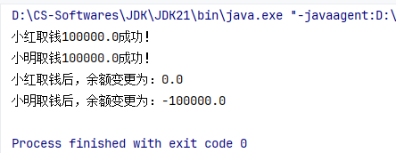
让多个线程实现按顺序访问同一个共享资源，这样就解决了线程安全问题。
格式：
xxxxxxxxxx31synchronized(同步锁){2 // 访问共享资源的核心代码3}作用：将访问共享资源的核心代码块加锁，从而保证线程安全。
原理：每次只允许一个线程加锁后进入，执行完毕后自动解锁，其它线程才可以再次加锁后进入。
同步锁的注意事项：对于当前同时执行的线程来说，同步锁必须是同一把（同一个对象），否则会出bug。
Account类xxxxxxxxxx371/**2 * 账户类，代表小明和小红的共同银行账户3 * 单例模式4 */5public class Account {6 private double money;// 账户余额7
8 private static Account account = new Account(100000);9 private Account(double money) {10 this.money = money;11 }12 public static Account getAccount() {13 return account;14 }15
16 public void drawMoney(double moneyToDraw) {17 String threadName = Thread.currentThread().getName();18 19 // 同步代码块20 synchronized ("Zsh") {// 由于"Zsh"在程序中只有一份，因此可以作为同一把锁21 if (money >= moneyToDraw) {22 System.out.println(threadName + moneyToDraw + "成功！");23 money -= moneyToDraw;24 System.out.println(threadName + "后，余额变更为：" + money);25 } else {26 System.out.println(threadName + "：余额不足！");27 }28 }29 }30
31 public double getMoney() {32 return money;33 }34 public void setMoney(double money) {35 this.money = money;36 }37}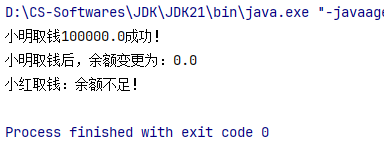
假如有了新需求：小黑和小白是零一对夫妻，他们也有一个共同银行账户Account2，余额是10万元，现在同样想要模拟二人同时取出10万元的操作。
这时候，以下代码就暴露出了问题：
xxxxxxxxxx131public void drawMoney(double moneyToDraw) {2 String threadName = Thread.currentThread().getName(); 3
4 synchronized ("Zsh") {5 if (money >= moneyToDraw) {6 System.out.println(threadName + moneyToDraw + "成功！");7 money -= moneyToDraw;8 System.out.println(threadName + "后，余额变更为：" + money);9 } else {10 System.out.println(threadName + "：余额不足！");11 }12 }13}小明对Account1执行取钱操作时，他加了锁，但不光锁住了小红对Account1的访问权限，也锁住了小黑和小白对Account2的访问权限，这在逻辑上是不合理的！
根本原因：“Zsh”这个锁的范围过大。
thisthis代表账户对象，对于小明、小红来说this是account1，对于小黑、小白来说this是account2。
xxxxxxxxxx131public void drawMoney(double moneyToDraw) {2 String threadName = Thread.currentThread().getName();3
4 synchronized (this) {5 if (money >= moneyToDraw) {6 System.out.println(threadName + moneyToDraw + "成功！");7 money -= moneyToDraw;8 System.out.println(threadName + "后，余额变更为：" + money);9 } else {10 System.out.println(threadName + "：余额不足！");11 }12 }13}对于静态方法来说，建议使用类名.class作为锁对象，因为它只有一份，即：
xxxxxxxxxx31synchronized(Xxx.class){2 3}
格式：
xxxxxxxxxx31权限修饰符 synchronized 返回值类型 方法名(形参列表){2 // 访问共享资源的核心代码3}作用：将访问共享资源的核心方法加锁，从而保证线程安全。
原理：
每次只允许一个线程加锁后进入，执行完毕后自动解锁，其它线程才可以再次加锁后进入。
被synchronized修饰的实例方法，隐含了一把锁，锁对象默认是this。
被synchronized修饰的静态方法，隐含了一把锁，锁对象默认是类名.class。
Account类xxxxxxxxxx361/**2 * 账户类，代表小明和小红的共同银行账户3 * 单例模式4 */5public class Account {6 private double money;// 账户余额7
8 private static Account account = new Account(100000);9 private Account(double money) {10 this.money = money;11 }12 public static Account getAccount() {13 return account;14 }15
16 // 同步方法，加上synchronized关键字17 public synchronized void drawMoney(double moneyToDraw) {18 String threadName = Thread.currentThread().getName();19
20 if (money >= moneyToDraw) {21 System.out.println(threadName + moneyToDraw + "成功！");22 money -= moneyToDraw;23 System.out.println(threadName + "后，余额变更为：" + money);24 } else {25 System.out.println(threadName + "：余额不足！");26 }27
28 }29
30 public double getMoney() {31 return money;32 }33 public void setMoney(double money) {34 this.money = money;35 }36}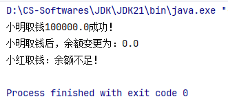
| 同步代码块 | 同步方法 | |
|---|---|---|
| 范围 | 较小 | 较大 |
| 性能 | 较高 | 较低 |
| 可读性 | 较差 | 较好 |
注：锁的范围越小，则代码性能越高，因为一个方法内部并非所有代码都是需要互斥访问的临界资源，如果无脑全部锁住，就会导致其他线程无法提前加载那些非临界资源，导致性能下降。
Lock锁Lock锁是JDK5开始提供的一个新的锁操作，通过它可以创建出锁对象，进行手动加锁和解锁，更加灵活、方便和强大。
Lock是一个接口，不能直接实例化，我们可以用它的其中一个实现类ReentrantLock来创建锁对象。
Account类xxxxxxxxxx411import java.util.concurrent.locks.Lock;2import java.util.concurrent.locks.ReentrantLock;3
4/**5 * 账户类，代表小明和小红的共同银行账户6 * 单例模式7 */8public class Account {9 private double money;// 账户余额10 private final Lock accountLock = new ReentrantLock();// Lock锁对象，一个账户对象一把锁11
12 private static Account account = new Account(100000);13 private Account(double money) {14 this.money = money;15 }16 public static Account getAccount() {17 return account;18 }19
20 public void drawMoney(double moneyToDraw) {21 String threadName = Thread.currentThread().getName();22
23 accountLock.lock();// 加锁24 if (money >= moneyToDraw) {25 System.out.println(threadName + moneyToDraw + "成功！");26 money -= moneyToDraw;27 System.out.println(threadName + "后，余额变更为：" + money);28 } else {29 System.out.println(threadName + "：余额不足！");30 }31 accountLock.unlock();// 解锁32
33 }34
35 public double getMoney() {36 return money;37 }38 public void setMoney(double money) {39 this.money = money;40 }41}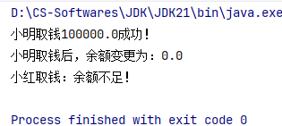
drawMoney方法内部，若加锁后，执行访问共享资源的核心代码过程中出现了异常，会使线程异常终止，无法进行解锁操作，从而导致其他线程也无法加锁，程序卡死。
try-catch-finally包裹核心代码xxxxxxxxxx181public void drawMoney(double moneyToDraw) {2 String threadName = Thread.currentThread().getName();3
4 accountLock.lock();// 加锁5 try {6 if (money >= moneyToDraw) {7 System.out.println(threadName + moneyToDraw + "成功！");8 money -= moneyToDraw;9 System.out.println(threadName + "后，余额变更为：" + money);10 } else {11 System.out.println(threadName + "：余额不足！");12 }13 } catch (Exception e) {14 e.printStackTrace();15 } finally {16 accountLock.unlock();// 解锁17 } 18}
当多个线程同时访问同一个共享资源时，线程之间可以通过某种方式互相告知自己的状态以相互协调，避免无效的资源争夺。
生产者线程负责生产数据。
消费者线程负责消费生产者线程生产出来的数据。
生产者生产完数据后应该通知消费者消费，然后等待自己（不继续生产）；消费者消费完数据后也应该通知生产者生产，然后等待自己（不继续消费）。
先唤醒别人，再等待自己，否则无法唤醒。
创建3个生产者线程，负责生产包子，每个线程每次只能生产1个包子放在桌子上；
创建2个消费者线程，负责吃包子，每个线程每次只能从桌子上拿1个包子吃。
Object类提供的等待和唤醒方法Warning
以下方法应该使用当前同步锁对象进行调用。
| 方法 | 说明 |
|---|---|
void wait() | 让当前线程等待并释放占用的锁，直到另一个线程调用notify()或notifyAll()方法。 |
void notify() | 唤醒正在等待的某个线程。 |
void notifyAll() | 唤醒正在等待的所有线程。 |
Desk:
xxxxxxxxxx491import java.util.ArrayList;2import java.util.List;3
4public class Desk {5 private List<String> list = new ArrayList<>();6
7 // 放1个包子：cook1 cook2 cook38 public synchronized void put() {9 String name = Thread.currentThread().getName();10 try {11 if (list.size() == 0) {12 list.add(name + "'s bread");13 System.out.println(name + " makes a bread");14 Thread.sleep(1000);15
16 // 先唤醒别人，再等待自己，否则无法唤醒17 this.notifyAll();18 this.wait();19 } else {20 // 有包子了，不做了21 // 先唤醒别人，再等待自己，否则无法唤醒22 this.notifyAll();23 this.wait();24 }25 } catch (Exception e) {26 e.printStackTrace();27 }28 }29
30 // 取1个包子：eater1 eater231 public synchronized void get() {32 String name = Thread.currentThread().getName();33 try {34 if (list.size() == 1) {35 System.out.println(name + " eats " + list.get(0));36 list.clear();37 Thread.sleep(1000);38
39 this.notifyAll();40 this.wait();41 } else {42 this.notifyAll();43 this.wait();44 }45 } catch (Exception e) {46 e.printStackTrace();47 }48 }49}Cook:
xxxxxxxxxx141public class Cook implements Runnable {2 private Desk desk;3
4 public Cook(Desk desk) {5 this.desk = desk;6 }7
8 9 public void run() {10 while (true) {11 desk.put();12 }13 }14}Eater:
xxxxxxxxxx141public class Eater implements Runnable {2 private Desk desk;3
4 public Eater(Desk desk) {5 this.desk = desk;6 }7
8 9 public void run() {10 while (true) {11 desk.get();12 }13 }14}Test:
xxxxxxxxxx141public class Test {2 public static void main(String[] args) {3 Desk desk = new Desk();4
5 // 创建3个生产者线程6 new Thread(new Cook(desk), "cook1").start();7 new Thread(new Cook(desk), "cook2").start();8 new Thread(new Cook(desk), "cook3").start();9
10 // 创建2个消费者线程11 new Thread(new Eater(desk), "eater1").start();12 new Thread(new Eater(desk), "eater2").start();13 }14}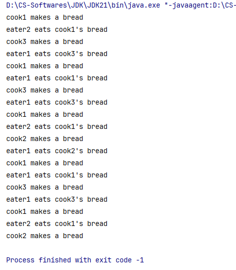
线程池是一个可以复用线程的技术。
不使用线程池时存在的问题：用户每发起一个请求，后台就需要创建一个新线程来处理这个请求，而创建新线程的开销是很大的，并且请求过多时会产生大量线程，严重影响系统性能。
线程池的工作原理：
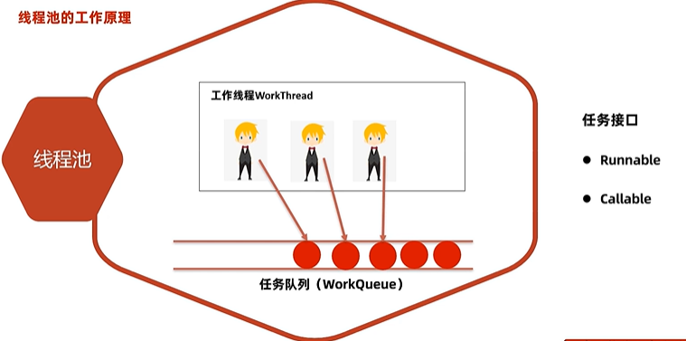
Important
JDK5.0起提供了代表线程池的接口：ExecutorService。
临时线程什么时候创建？
新任务提交时发现核心线程都在忙，任务队列也满了，并且线程池允许创建临时线程，此时才可以创建临时线程。
什么时候开始拒绝新任务？
核心线程和临时线程都在忙，任务队列也满了，新任务过来的时候才会开始拒绝新任务。
线程池的线程数设置为多少比较好？
计算密集型任务：推荐核心线程数=本机线程数（x核y线程，看y）+1
IO密集型任务：推荐核心线程数=本机线程数（x核y线程，看y）*2
ExecutorService的实现类ThreadPoolExecutorxxxxxxxxxx91public ThreadPoolExecutor(2 int corePoolSize, // 线程池的核心线程数3 int maximumPoolSize, // 线程池的最大线程数（核心线程数+临时线程数）4 long keepAliveTime, // 临时线程的存活时间5 TimeUnit unit, // 临时线程的存活时间单位（纳秒/毫秒/秒/分钟/...） 6 BlockingQueue<Runnable> workQueue, // 线程池的任务队列7 ThreadFactory threadFactory, // 线程池的线程工厂8 RejectedExecutionHandler handler // 线程池的任务拒绝策略（线程都在忙，任务队列也满了的时 候，新任务来了怎么处理）9)代码演示：
xxxxxxxxxx171public class Test {2 public static final int CORE_POOL_SIZE = 3;3 public static final int MAX_POOL_SIZE = 5;4 public static final long KEEP_ALIVE_TIME = 10;5
6 public static void main(String[] args) {7 ExecutorService executorService = new ThreadPoolExecutor(8 CORE_POOL_SIZE,9 MAX_POOL_SIZE,10 KEEP_ALIVE_TIME,11 TimeUnit.SECONDS,12 new ArrayBlockingQueue<>(4),13 Executors.defaultThreadFactory(),14 new ThreadPoolExecutor.AbortPolicy()15 );16 }17}
ExecutorService的常用方法| 序号 | 方法 | 说明 |
|---|---|---|
| 01 | void execute(Runnable command) | 执行Runnable任务。 |
| 02 | Future<T> submit(Callable<T> task) | 执行Callable任务，返回未来任务对象，用于获取线程返回的结果。 |
| 03 | void shutdown() | 等全部任务执行完毕后，再关闭线程池。 |
| 04 | List<Runnable> shutdownNow() | 立即关闭线程池，停止正在执行的任务，并返回队列中未执行的任务。 |
Runnable任务Caution
当每个线程执行的任务内容不多，可以很快执行完毕的情况下，线程池会复用核心线程。
xxxxxxxxxx361import java.util.concurrent.*;2
3public class Test {4 public static final int CORE_POOL_SIZE = 3;5 public static final int MAX_POOL_SIZE = 5;6 public static final long KEEP_ALIVE_TIME = 10;7
8 public static void main(String[] args) {9 ExecutorService pool = new ThreadPoolExecutor(10 CORE_POOL_SIZE,11 MAX_POOL_SIZE,12 KEEP_ALIVE_TIME,13 TimeUnit.SECONDS,14 new ArrayBlockingQueue<>(4),15 Executors.defaultThreadFactory(),16 new ThreadPoolExecutor.AbortPolicy()17 );18
19 Runnable target = (() -> {20 String name = Thread.currentThread().getName();21 System.out.println(name + "==> output 666");22 try {23 Thread.sleep(1000);// 休眠1s24 } catch (InterruptedException e) {25 throw new IllegalStateException(e);26 }27 });28
29 pool.execute(target);// 线程池会自动创建一个新线程，自动处理这个任务，自动执行30 pool.execute(target);// 线程池会自动创建一个新线程，自动处理这个任务，自动执行31 pool.execute(target);// 线程池会自动创建一个新线程，自动处理这个任务，自动执行32 pool.execute(target);// 复用前面的核心线程33 pool.execute(target);// 复用前面的核心线程34 pool.shutdown();35 }36}控制台输出：
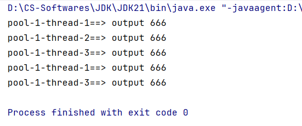
Caution
新任务提交时发现核心线程都在忙，任务队列也满了，并且线程池允许创建临时线程，此时会启用临时线程。
xxxxxxxxxx401import java.util.concurrent.*;2
3public class Test {4 public static final int CORE_POOL_SIZE = 3;5 public static final int MAX_POOL_SIZE = 5;6 public static final long KEEP_ALIVE_TIME = 10;7
8 public static void main(String[] args) {9 ExecutorService pool = new ThreadPoolExecutor(10 CORE_POOL_SIZE,11 MAX_POOL_SIZE,12 KEEP_ALIVE_TIME,13 TimeUnit.SECONDS,14 new ArrayBlockingQueue<>(4),15 Executors.defaultThreadFactory(),16 new ThreadPoolExecutor.AbortPolicy()17 );18
19 Runnable target = (() -> {20 String name = Thread.currentThread().getName();21 System.out.println(name + "==> output 666");22 try {23 Thread.sleep(Integer.MAX_VALUE);// 无止境休眠24 } catch (InterruptedException e) {25 throw new IllegalStateException(e);26 }27 });28
29 pool.execute(target);// 线程池会自动创建一个新线程，自动处理这个任务，自动执行30 pool.execute(target);// 线程池会自动创建一个新线程，自动处理这个任务，自动执行31 pool.execute(target);// 线程池会自动创建一个新线程，自动处理这个任务，自动执行32 pool.execute(target);// 进入任务队列：1/433 pool.execute(target);// 进入任务队列：2/434 pool.execute(target);// 进入任务队列：3/435 pool.execute(target);// 进入任务队列：4/4，任务队列已满36 pool.execute(target);// 开始启用临时线程37 pool.execute(target);// 启用第2个临时线程38 pool.shutdown();39 }40}控制台输出：
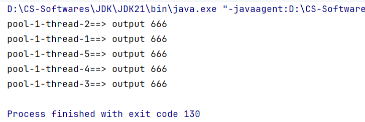
Caution
核心线程和临时线程都在忙，任务队列也满了，新任务过来的时候才会开始拒绝新任务。
继续追加一行代码pool.execute(target);，控制台输出如下：
xxxxxxxxxx101Exception in thread "main" java.util.concurrent.RejectedExecutionException: Task thread_pool.Test$$Lambda/0x000001c6dc0031f8@9807454 rejected from java.util.concurrent.ThreadPoolExecutor@12edcd21[Running, pool size = 5, active threads = 5, queued tasks = 4, completed tasks = 0]2 at java.base/java.util.concurrent.ThreadPoolExecutor$AbortPolicy.rejectedExecution(ThreadPoolExecutor.java:2081)3 at java.base/java.util.concurrent.ThreadPoolExecutor.reject(ThreadPoolExecutor.java:841)4 at java.base/java.util.concurrent.ThreadPoolExecutor.execute(ThreadPoolExecutor.java:1376)5 at thread_pool.Test.main(Test.java:40)6pool-1-thread-2==> output 6667pool-1-thread-4==> output 6668pool-1-thread-3==> output 6669pool-1-thread-5==> output 66610pool-1-thread-1==> output 666
| 策略 | 说明 |
|---|---|
ThreadPoolExecutor.AbortPolicy | 丢弃新任务并抛出RejectedExecutionException异常，是默认策略。 |
ThreadPoolExecutor.DiscardPolicy | 丢弃新任务，但是不抛出任何异常，不推荐此策略。 |
ThreadPoolExecutor.DiscardOldestPolicy | 丢弃任务队列中等待最久的任务（即队尾任务），然后把新任务加入队列中。 |
ThreadPoolExecutor.CallerRunPolicy | 由主线程负责调用新任务的run()方法，从而绕过线程池直接执行。 |
Callable任务xxxxxxxxxx391import java.util.concurrent.*;2
3public class Test2 {4 public static final int CORE_POOL_SIZE = 3;5 public static final int MAX_POOL_SIZE = 5;6 public static final long KEEP_ALIVE_TIME = 10;7
8 public static void main(String[] args) throws Exception {9 ExecutorService pool = new ThreadPoolExecutor(10 CORE_POOL_SIZE,11 MAX_POOL_SIZE,12 KEEP_ALIVE_TIME,13 TimeUnit.SECONDS,14 new ArrayBlockingQueue<>(4),15 Executors.defaultThreadFactory(),16 new ThreadPoolExecutor.AbortPolicy()17 );18
19 Callable<String> myCallable = (() -> {20 String name = Thread.currentThread().getName();21 int sum = 0;22 for (int i = 1; i <= 100; i++) {23 sum += i;24 }25 return name + " calculate the sum from 1 to 100: " + sum;26 });27
28 Future<String> f1 = pool.submit(myCallable);29 Future<String> f2 = pool.submit(myCallable);30 Future<String> f3 = pool.submit(myCallable);31 Future<String> f4 = pool.submit(myCallable);32 System.out.println(f1.get());33 System.out.println(f2.get());34 System.out.println(f3.get());35 System.out.println(f4.get());36 pool.shutdown();37
38 }39}控制台输出：
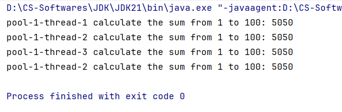
Executors的工厂方法Executors是线程池的一个工具类，提供了很多静态方法，用于返回不同特点的线程池对象。
| 序号 | 静态方法 | 说明 |
|---|---|---|
| 01 | static ExecutorService newFixedThreadPool(int nThreads) | 创建固定数量线程的线程池，如果某个线程因为执行异常而结束，那么线程池会复用一个线程代替它。 |
| 02 | static ExecutorService newSingleThreadExecutor() | 创建只有一个线程的线程池，如果该线程因为执行异常而结束，那么线程池会复用一个线程代替它。 |
| 03 | static ExecutorService newCachedThreadPool() | 创建一个线程池，它会根据需要自动增加线程数量，但在已有线程可用时会优先复用这些先前创建的线程。如果线程任务执行完毕且空闲了60s，则该线程会被回收。 |
| 04 | static ScheduledExecutorService newScheduledThreadPool(int corePoolSize) | 创建一个能够在指定延迟后运行任务，或定期执行任务的线程池。 |
这些静态方法的底层实现，本质上都是通过使用ExecutorService的实现类ThreadPoolExecutor来创建线程池对象。
注意事项：大型并发系统中，使用Executors可能会导致OOM（OutOfMemory：内存溢出错误），阿里巴巴Java开发手册明确指出：
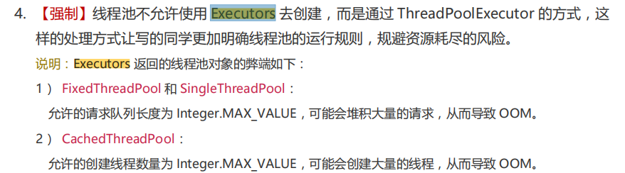
正在运行的程序或软件就是一个独立的进程。
线程属于进程，一个进程中可以同时运行多个线程。
进程中的多个线程是既有并发，又有并行地执行的。
并发：进程中的线程是由CPU负责调度执行的，但CPU能够同时处理的线程数量有限，为了保证全部线程都能往前执行，CPU会轮询为每个线程服务，由于CPU的线程切换速度极快，对于程序员来说就好像这些线程在同时执行。这就是“并发”。
并行：在同一个时间点，同时有多个线程在被CPU调度执行。比如我的笔记本电脑是8核16线程，那么最多支持16个线程并行运行。
生命周期：线程从生到死的过程中，经历的各种状态及状态转换。
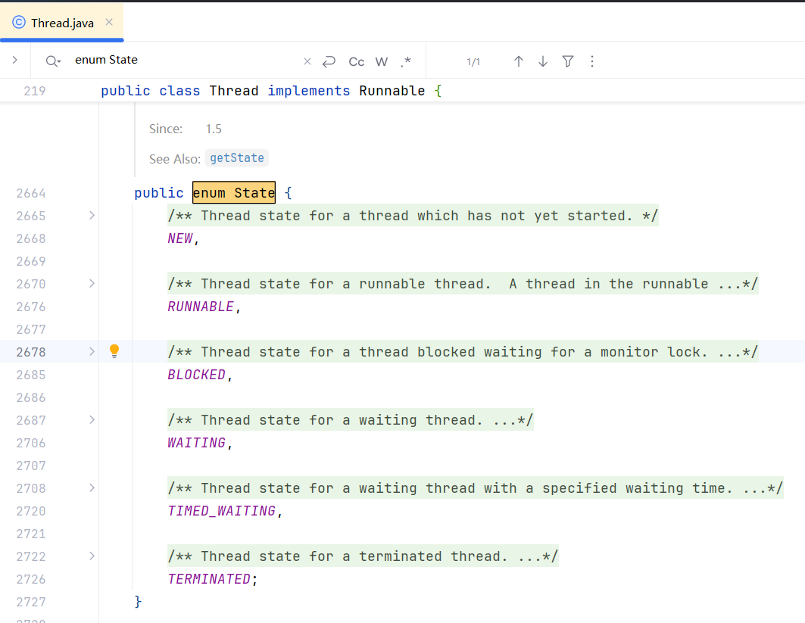
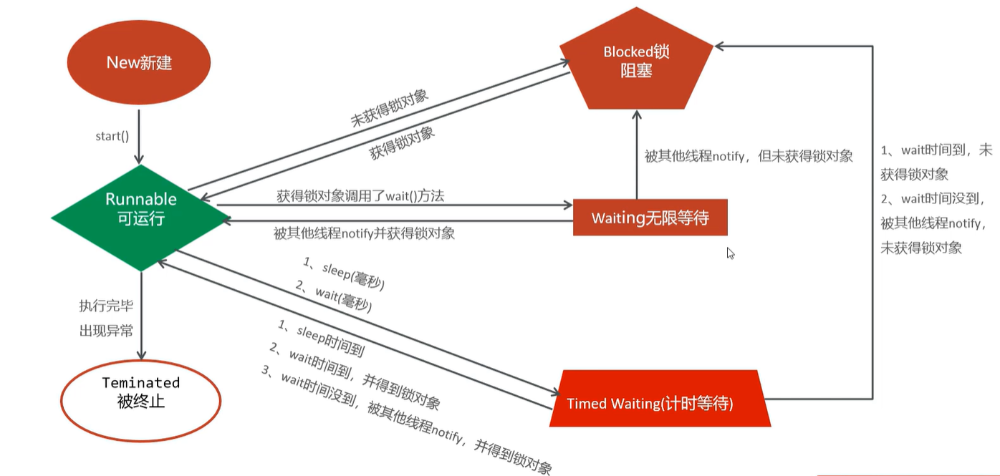
悲观锁：访问临界资源前必须加锁，每次只能一个线程访问完毕后再解锁。线程安全，但如果有大量线程同时想要访问临界资源，会导致激烈的锁竞争，性能较差。
乐观锁：访问临界资源前不加锁，认为没有问题，等到出现线程安全问题时才介入处理。线程安全，性能较好。
Test：
xxxxxxxxxx91public class Test {2 public static void main(String[] args) {3 // 需求：1个变量，1000个线程，每个线程对该变量执行1000次+1操作4 Runnable target = new MyRunnable();5 for (int i = 0; i < 1000; i++) {6 new Thread(target).start();7 }8 }9}MyRunnable：
xxxxxxxxxx101public class MyRunnable implements Runnable {2 private int count=0;3
4 5 public void run() {6 for (int i = 0; i < 1000; i++) {7 System.out.println("count ==> " + (++count));8 }9 }10}某次控制台输出如下：
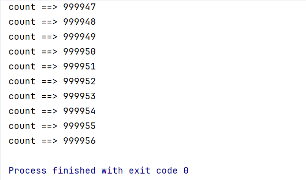
按照预期，count的最终值应该是1000000，但显然在此次输出中count的最终值是999956，表明案例代码存在线程安全问题。这是因为，有可能出现两个线程同时取出count值，比如都是10，然后都对count进行+1操作，变成11，这样就相当于抵消了1次+1操作。
xxxxxxxxxx271public class MyRunnable implements Runnable {2 private int count = 0;3 private long start;4 private long end;5
6 7 public void run() {8 synchronized (this) {9 if (count == 0) {10 start = System.currentTimeMillis();11 }12 }13
14 for (int i = 0; i < 1000; i++) {15 synchronized (this) {16 System.out.println("count ==> " + (++count));17 }18 }19
20 synchronized (this) {21 if (count == 1000000) {22 end = System.currentTimeMillis();23 System.out.println("using time millis: " + (end - start));24 }25 }26 }27}控制台输出：
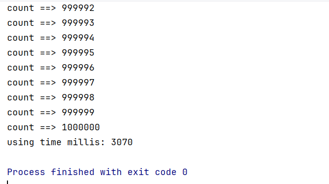
可以看到，线程安全问题已经被解决了，耗时3070ms。
xxxxxxxxxx291import java.util.concurrent.atomic.AtomicInteger;2
3public class MyRunnable implements Runnable {4 private long start;5 private long end;6
7 // 适用于整数修改的乐观锁：Atomic的一个实现类8 private AtomicInteger count = new AtomicInteger();9
10 11 public void run() {12 synchronized (this) {13 if (count.get() == 0) {14 start = System.currentTimeMillis();15 }16 }17
18 for (int i = 0; i < 1000; i++) {19 System.out.println("count ==> " + count.incrementAndGet());20 }21
22 synchronized (this) {23 if (count.get() == 1000000) {24 end = System.currentTimeMillis();25 System.out.println("using time millis: " + (end - start));26 }27 }28 }29}控制台输出：
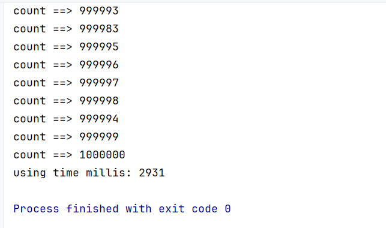
可以看到，线程安全问题已经被解决了，耗时2931ms，比使用悲观锁快了大约140ms。
AtomicInteger源码以下原理图来自文章：https://medium.com/@pravvich/cas-and-faa-through-the-eyes-of-a-java-developer-8a028f213624，
仅用于个人学习，如有侵权，请联系删除。
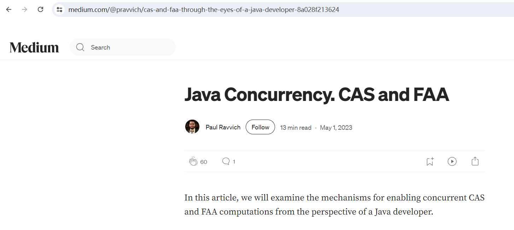
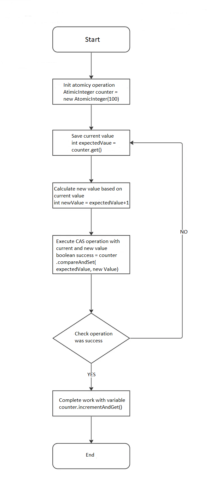
incrementAndGet()方法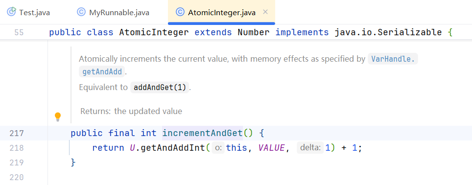
VALUE变量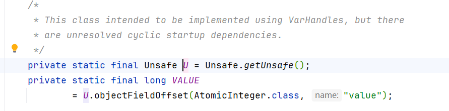
分析可知，VALUE是一个指向value的指针。
getAndAddInt()方法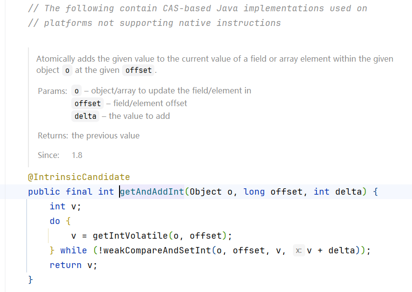
分析可知，该方法本质上基于CAS算法。
weakCompareAndSetInt()方法（weak意为弱化版）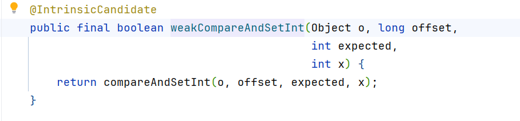
此方法的返回值是调用了另一个方法compareAndSetInt()：
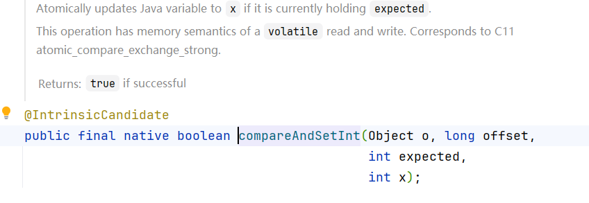
此方法用native关键字修饰，表示是由C/C++实现，而非Java，意味着我们的分析已经触及到最底层了。